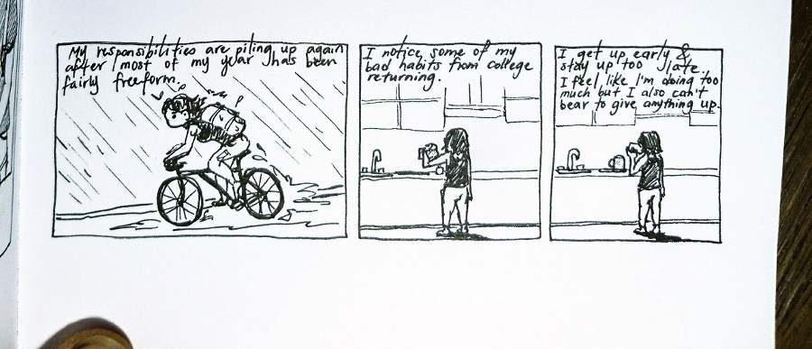

so I can work longer, so I can earn more,
This song has been on my mind.
I will save you the experience of listening to it! Spoilers: it’s some trashy EDM about bottomless recursion:
I do coke,
so I can work longer,
so I can earn more,
so I can do more coke.
>—
I was talking to someone I met at my first game jam (!!!) last month, and he responded to my usual yearnings for mountains immediately by identifying it as an addiction. I felt pretty put off by this because addiction is a word for bad things, but a couple days later it came up in my thoughts again. I am dependent on movement and freedom for happiness and I feel withdrawal when I don’t have these things, no matter how many other social/intellectual/career/emotional/artistic needs I’m hitting.
I
{ exercise | hang out in nature | chill in mountains },
so I can work longer,
so I can earn more,
so I can have longer gaps between soul-consuming full-time employment to{ exercise | hang out in nature | chill in mountains }.
>—
I am suspicious of a lot of the public concern over “work/life balance” and “self-care” and the entire category of nice words symbolising nice ideas that are starting to grate on me from corporate overuse. It’s to the industry’s benefit if people recursed between being healthy and working more, so they have their own non-selfless incentives to loudly wave around the banners of self-care.
Yes a lot of individuals actually care about taking care of themselves. But even then, to what end? I’m concerned that for a lot of people, there isn’t much more than
I
maintain this meat vessel of my consciousness,
so I can work longer,
so I can earn more,
so I cancontinue maintaining this meat vessel of my consciousness.
We’re all robots already! Nothing has changed in the last milleniums, we’re still all shackled to labor except we’re shoveling digital dirt instead of moving around actual dirt. I think about my old landlord who made part of his living buying stuff for cheap on ebay and selling it again. This really shouldn’t be a thing people need to do, it’s just spinning wheels and it’s ridiculous!
We occasionally have some friends who leave their solid and stable white-collar office careers to be carpenters and farmers. This sounds super cute, but from my perspective, my dad spent most of his life working his ass off to not be a carpenter and farmer. This context makes these things a little weird for me.
At this point I think I’m solidly in softcore existential crisis mode :^) Anyway I’m having a lot of fun learning clojurescript
1 | (defn freedom [] |
Clojure(/script) is a language and toolchain that I keep forgetting no one actually knows about because I spent most of my time these days deeply lodged in the loving nest of the clojure community. When I crawl out of this nest I get a lot of scepticism concerning my current life trajectory, like “why would you spend so much time on such an obscure thing when you could be learning a useful skill???” (the same flavour of scepticism I got a lot in Serbia where locals I met were like “why did you come here if you could literally go anywhere???”)
On one hand, why do anything at all? jkjk I’m not actually a nihilist those people are terrifying. The process of learning a language/toolchain/specialisation is transferable and does feel less insurmountable and more efficient every time, so there’s that clasic “learning to learn” thing. But also learning itself has intrinsic value, kinda like how art has intrinsic value because we decided so.
Learning, like art and music and socialising and mountains, fills in the spaces between maintaining the meat vessel of your consciousness and working, to make things nice.
It’s fun.
I have to be careful about trying to have too much fun.

comments
No comments at the moment. Hey, you could write one \o/